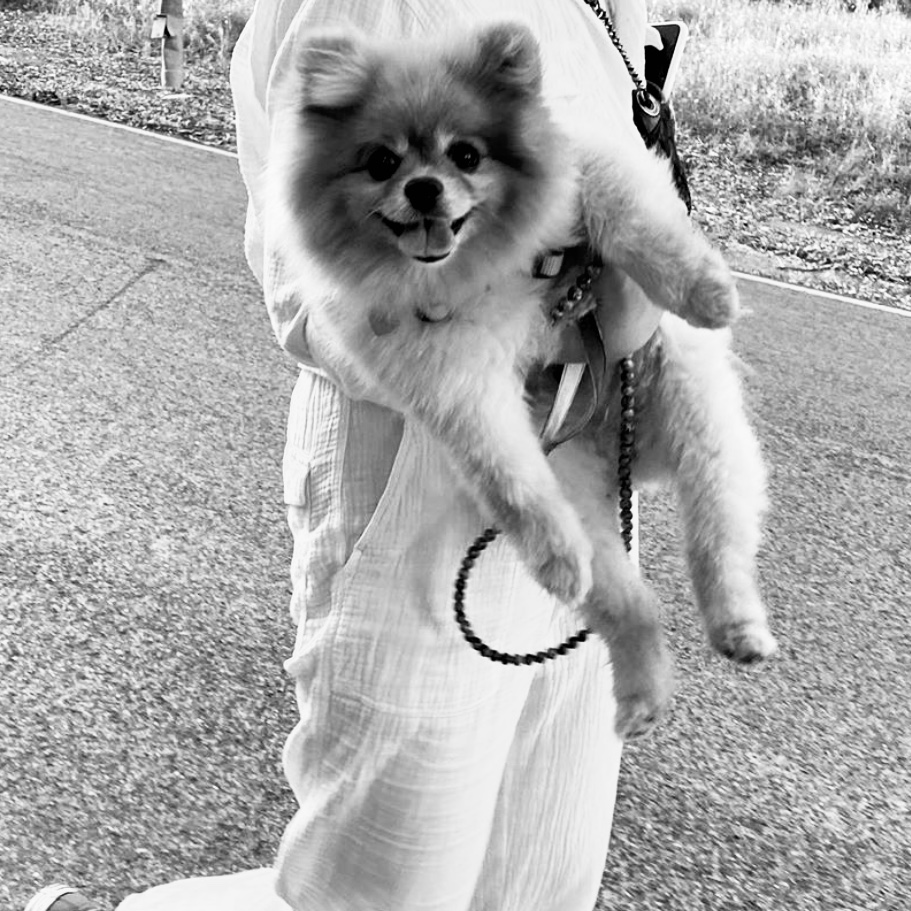
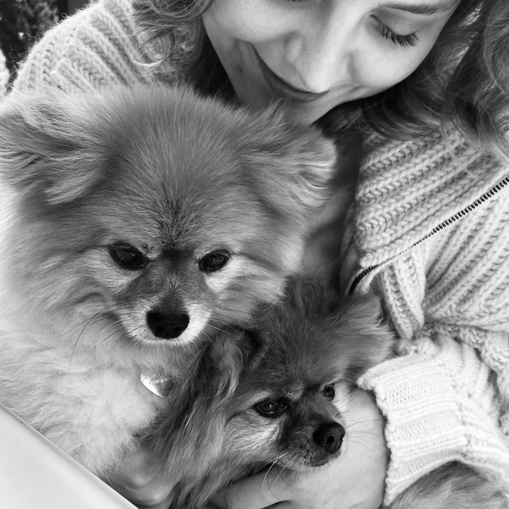

Hello World
My name is Sofya. I'm a 23 y.o. Russian & Swiss student, currently learning the basics of Web Development with Le Wagon.
Design InspoCareer Aspirations
I am passionate about innovation & entrepreneurship. I aspire to contribute to environmental & societal prosperity through the development of sustainable bussiness solutions.
Animal Welfare
I have abandoned unethical consumer products and supporting companies that practice animal testing. Animals deserve kindness, compassion, and respect.
#GoCrueltyFreeAlso, check out the pictures of my dogs (it's an obsession ♥).
 
Love for Music
Music is my sanctuary. There is nothing that makes me feel alive more than experiencing a full specter of emotions, and for me, music is the epitome of emotions that you can turn to at any point in time.